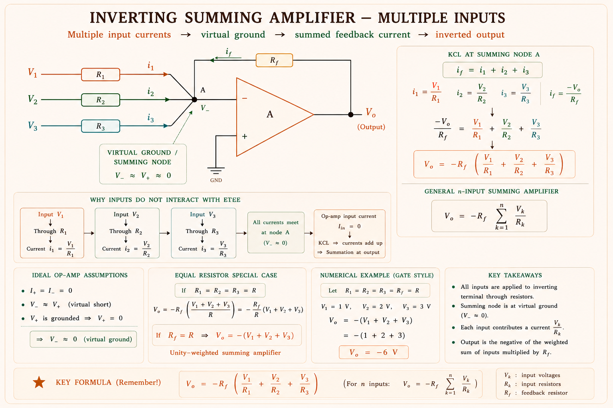
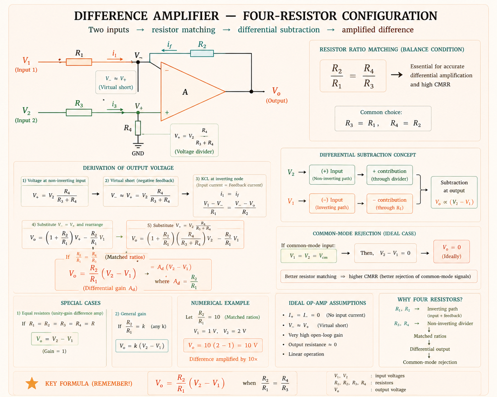
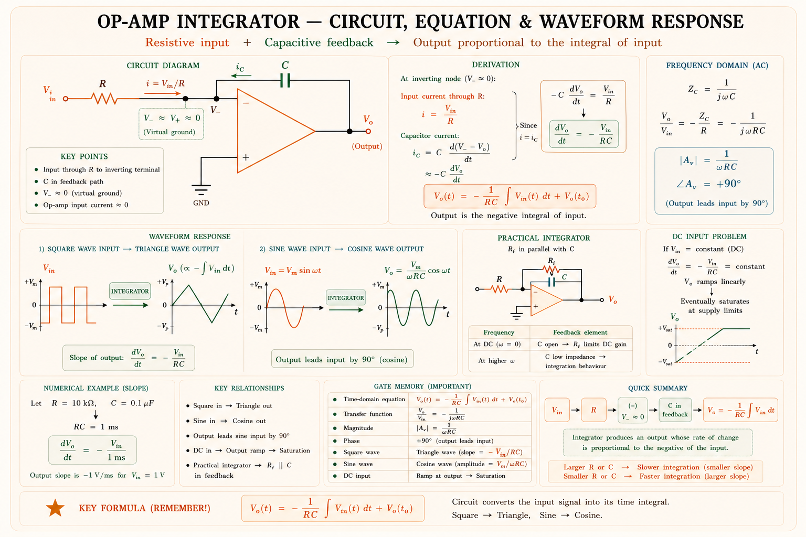
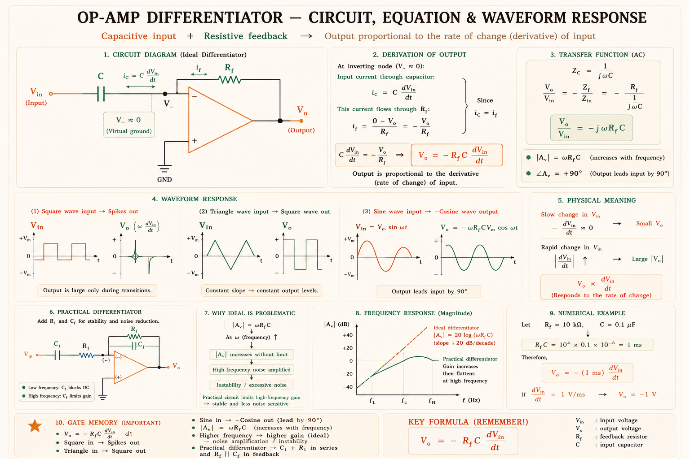
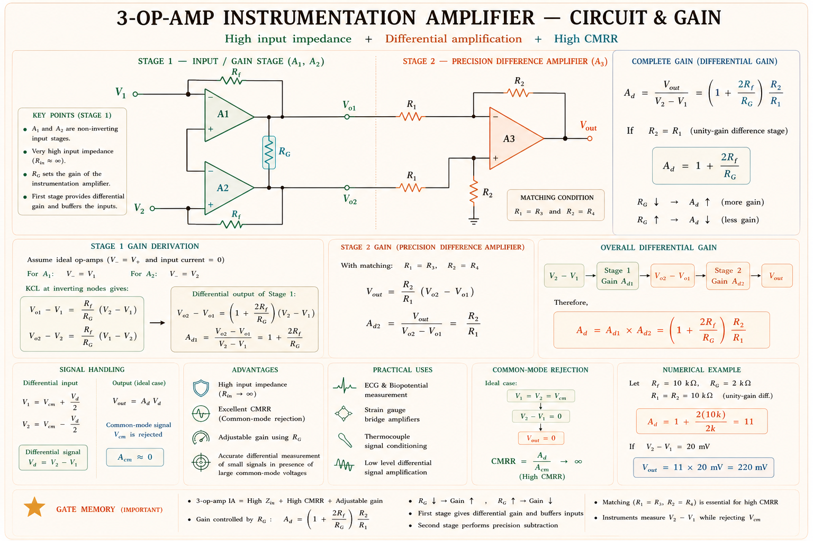
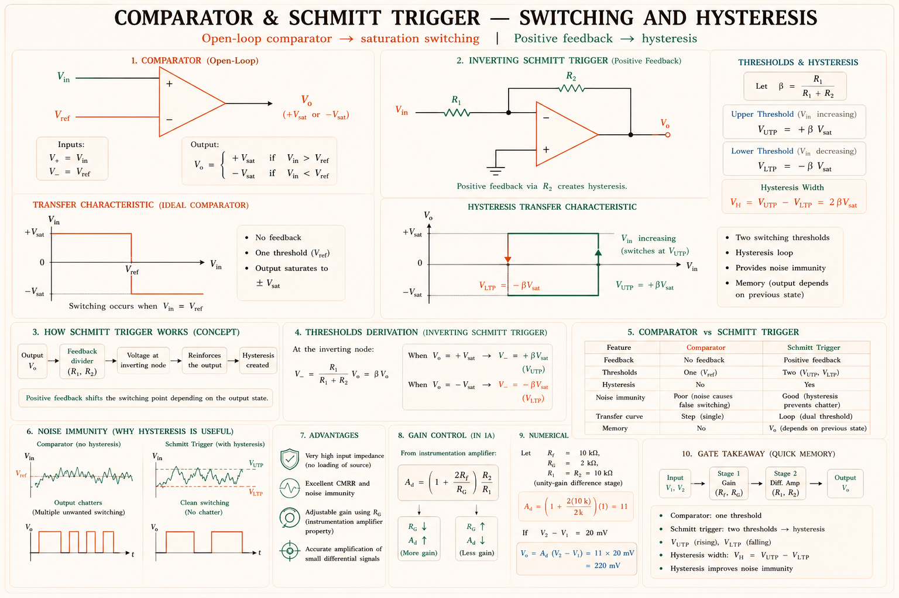
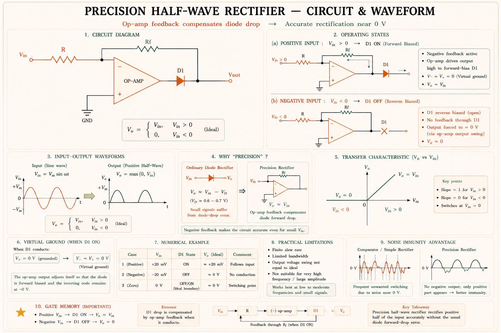
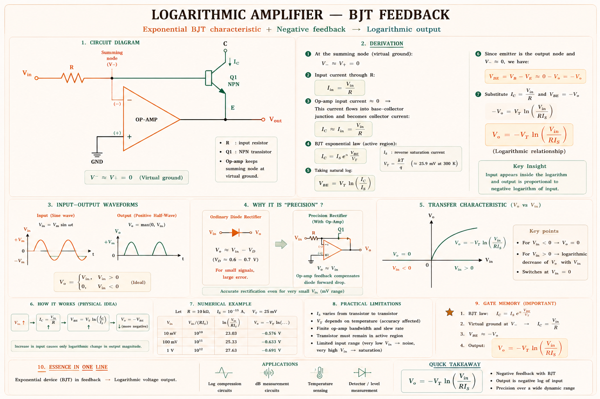

A complete GATE/IES study guide on Operational Amplifier circuits — from summing amplifiers and integrators to instrumentation amplifiers and log amplifiers. Built from Sedra/Smith, Razavi, and Gayakwad with step-by-step derivations and original SVG diagrams.
An op-amp configured to add two or more input voltages in a weighted or unweighted manner is called a summing amplifier. It is the electronic realisation of the mathematical adder and forms the heart of audio mixing consoles, digital-to-analogue converters (DACs), and signal processing systems.[1]
In a recording studio, a sound engineer must mix guitar, vocals, and drums into a single output. The summing amplifier does exactly this electronically — it adds multiple signals with individual gain controls onto a single wire.
The most common summing amplifier uses the inverting configuration. Multiple input resistors connect to the inverting terminal (−); the non-inverting terminal (+) is grounded. The virtual earth principle (\(V^- \approx 0\,\text{V}\)) means each input sees only its own resistor — inputs do not interact.

Since the inverting input is at virtual earth \( V^- \approx 0 \), currents through each input resistor are:
For the unity-gain summing amplifier (equal resistors \( R_1=R_2=R_3=R_f=R \)):
Inputs are applied to the non-inverting terminal through resistors, then processed by a non-inverting stage. Output is \(V_{out} = +\frac{R_f}{R}(V_1+V_2+\cdots)\). Less common in practice because it requires a resistor network to maintain accurate summing.
| Application | How Summing Amplifier is Used | Field |
|---|---|---|
| Audio Mixer | Multiple microphone signals summed with individual gain (R ratio) | Music / Broadcast |
| DAC (R-2R ladder) | Binary-weighted currents summed to produce analogue voltage | Digital Electronics |
| PID Controller | Proportional + integral + derivative terms summed before actuator | Control Systems |
| Bias Adder | DC offset added to AC signal for single-supply operation | Instrumentation |
| Voltage Reference | Fractional voltages summed to generate a precise reference level | Power Electronics |
A difference amplifier amplifies the voltage difference between two inputs while (ideally) rejecting any signal common to both — called the common-mode signal. It is the fundamental building block of sensor interfaces, bridge circuits, and ECG machines.[1,2]

Apply superposition — set one input to zero at a time and find the contribution at output.
The CMRR quantifies how well the amplifier rejects noise common to both inputs (e.g., 50 Hz hum, supply ripple).
Even a 0.1% mismatch between \(R_1/R_2\) and \(R_3/R_4\) ratios can reduce CMRR from the ideal (\(\infty\)) to around 60 dB. For precision applications, use a matched resistor network IC or switch to the 3-op-amp instrumentation amplifier topology.
The op-amp integrator replaces the feedback resistor \(R_f\) with a capacitor \(C\). The output voltage is proportional to the time integral of the input signal. It is the cornerstone of analogue computation, waveform generation, and PID controllers.[1,2]

Using virtual earth (\(V^- \approx 0\)) and KCL at the inverting node:
The magnitude decreases at −20 dB/decade with increasing frequency (low-pass behaviour), and the phase is +90° (output lags by 90° relative to a true integration with sign).
At DC (\(\omega=0\)), the capacitive impedance is infinite. Any tiny DC offset current through R charges C indefinitely, driving the output to the supply rail. Fix: place a large feedback resistor \(R_f \gg R\) in parallel with C to provide DC stability. This limits low-frequency gain to \(-R_f/R\) rather than ∞.
| Input Waveform | Integrator Output | Reason |
|---|---|---|
| Square wave (±V) | Triangle wave (±slope) | Integral of constant = ramp |
| Sine wave \(A\sin\omega t\) | \(-\frac{A}{\omega RC}\cos\omega t\) | ∫sin = −cos; gain falls with ω |
| Triangle wave | Parabolic / sinusoidal | Integral of ramp = parabola |
| Impulse (delta) | Step (constant DC) | ∫δ(t) = u(t) |
| DC constant V | Ramp (output saturates) | ∫constant = increasing ramp → saturation |
The differentiator swaps the positions of R and C relative to the integrator — capacitor is at input, resistor in feedback. The output is proportional to the rate of change (derivative) of the input. Used in edge detection, rate-of-change sensing, and FM demodulation.[1]

Gain increases at +20 dB/decade — the differentiator amplifies high-frequency noise, making it inherently noisy and unstable when used in ideal form.
The ideal differentiator has infinite gain at infinite frequency, making it extremely sensitive to noise and prone to oscillation. The practical fix: add resistor \(R_1\) in series with C (limits gain to \(-R_f/R_1\) at high \(f\)) and capacitor \(C_f\) in parallel with \(R_f\) (rolls off gain above \(f = 1/2\pi R_f C_f\)).
Integrator → Input is R, feedback is C. Differentiator → Different: input is C, feedback is R. Just remember they are exact swaps of each other.
The instrumentation amplifier (IA) is a precision differential amplifier with extremely high input impedance, high CMRR, low offset, and a single external resistor \(R_G\) to set gain. It is the gold standard for sensor interfaces: strain gauges, thermocouples, load cells, and ECG electrodes.[1,2,3]

The 3-op-amp IA has essentially infinite input impedance (the inputs connect directly to the non-inverting pins of buffering op-amps). Gain is set by a single resistor \(R_G\) — changing gain does not disturb the resistor ratio balance, keeping CMRR high (>100 dB for ICs like INA128, AD620).
A comparator operates the op-amp in open-loop, using its enormous gain (~100,000) to produce a binary output: positive saturation (\(+V_{sat}\)) if \(V^+ > V^-\), or negative saturation (\(-V_{sat}\)) if \(V^+ < V^-\). It is used in analog-to-digital conversion, zero-crossing detectors, over-voltage alarms, and window detectors.[1,2]

The Schmitt trigger adds positive feedback to create two different switching thresholds, preventing multiple switching due to noise near a single threshold.
A noisy sensor signal near a threshold causes the comparator to switch back and forth rapidly — called "chatter" or "chattering." The Schmitt trigger's hysteresis band forces the signal to travel a finite distance beyond the threshold before switching back, giving clean, single transitions even on noisy inputs. Used in every push-button debounce circuit, digital input filter, and temperature controller hysteresis band.
An ordinary diode has a 0.6–0.7 V forward voltage drop, making it useless for rectifying millivolt-level signals. The precision rectifier places the diode inside the op-amp feedback loop — the op-amp compensates for the diode drop, resulting in a near-ideal rectifier with a threshold of essentially 0 V.[1,2]

A full-wave precision rectifier uses two diodes and two op-amp stages (or a summing amplifier stage after two half-wave rectifiers). The output is \(|V_{in}|\) regardless of polarity — used in RMS-to-DC converters, peak detectors, and absolute-value circuits.
By exploiting the exponential I-V characteristic of a BJT transistor or diode placed in the feedback loop, the op-amp can compute the logarithm or antilogarithm of the input voltage. These circuits are fundamental to analogue multiplication, division, power computation, and wide-range signal compression.[1,2]

The antilog amplifier is the inverse: the BJT is placed at the input side, resistor in feedback. The output is exponentially related to the input.
The thermal voltage \(V_T = kT/q \approx 26\,\text{mV}\) at 300 K changes with temperature. Both the log and antilog circuits are temperature-sensitive unless matched transistors and temperature compensation (thermistor or diode reference) are used. IC-based log amps (LOG100, AD8304) include on-chip compensation.
| Circuit | Feedback Element | Gain/Transfer | GATE Probability |
|---|---|---|---|
| Summing Amp | Resistor Rf | \(-R_f(V_1/R_1+V_2/R_2+\ldots)\) | 🟢 HIGH |
| Difference Amp | Resistors R1,R2,R3,R4 | \((R_2/R_1)(V_2-V_1)\) | 🟢 HIGH |
| Integrator | Capacitor C | \(-\frac{1}{RC}\int V_{in}\,dt\) | 🟢 HIGH |
| Differentiator | Resistor Rf (C at input) | \(-RC\frac{dV_{in}}{dt}\) | 🟡 MED |
| Instrumentation Amp | RG sets gain | \((1+2R/R_G)\cdot R_2/R_1\) | 🟢 HIGH |
| Comparator | None (open loop) | \(\pm V_{sat}\) (binary) | 🟢 HIGH |
| Schmitt Trigger | Positive feedback | \(V_{UTP}\), \(V_{LTP}\) hysteresis | 🟢 HIGH |
| Precision Rectifier | Diode in feedback | \(|V_{in}|\) (ideal) | 🟡 MED |
| Log Amp | BJT/diode in feedback | \(-V_T\ln(V_{in}/RI_S)\) | 🟡 MED |
| Antilog Amp | Resistor Rf (BJT at input) | \(-R_f I_S e^{V_{in}/V_T}\) | 🔴 LOW |
An inverting summing amplifier has \(R_1=R_2=10\,\text{k}\Omega\), \(R_f=20\,\text{k}\Omega\), \(V_1=2\,\text{V}\), \(V_2=1\,\text{V}\). What is \(V_{out}\)?
Solution: \(V_{out} = -R_f(V_1/R_1+V_2/R_2) = -20k(2/10k+1/10k) = -20k\times 0.3\,\text{mA} = -6\,\text{V}\)
A square wave of amplitude \(\pm 5\,\text{V}\) and frequency 1 kHz is applied to an integrator with \(R=10\,\text{k}\Omega\), \(C=0.01\,\mu\text{F}\). What is the output waveform?
Solution: \(RC=10^4\times10^{-8}=10^{-4}\,\text{s}\). Output slope \(= V_{in}/RC = \pm 5/10^{-4} = \pm 50\,\text{kV/s}\). Integral of constant = ramp → triangle wave output.
A non-inverting Schmitt trigger uses \(V_{sat}=\pm 13\,\text{V}\), \(R_1=10\,\text{k}\Omega\), \(R_2=90\,\text{k}\Omega\). Find the upper threshold potential (UTP) and lower threshold potential (LTP).
Solution: \(V_{UTP} = +V_{sat}\cdot R_1/(R_1+R_2)= 13\times 10k/100k = 1.3\,\text{V}\). By symmetry \(V_{LTP}=-1.3\,\text{V}\).
In a 3-op-amp instrumentation amplifier, \(R=25\,\text{k}\Omega\) and \(R_G=1\,\text{k}\Omega\). The output stage ratio \(R_2/R_1=1\). What is the overall voltage gain?
Solution: \(A_v = 1+2R/R_G = 1 + 2\times25k/1k = 1+50 = 51\)
Using the summing formula: \(V_{out} = -R_f\!\left(\frac{V_{b2}}{R_{b2}}+\frac{V_{b1}}{R_{b1}}+\frac{V_{b0}}{R_{b0}}\right)\)
This corresponds to decimal 5 (= binary 101). Each bit contributes proportionally to its weight — exactly the principle of a binary-weighted DAC.
If the op-amp is powered by ±15 V supply, it saturates at approximately −13 V to −14 V well before 1 s. The output would saturate at ≈ \(t = 0.65\,\text{s}\). This illustrates why a practical integrator requires a reset switch or a large parallel resistor to limit integration time.
The differential gain remains approximately: \(A_d \approx R_2/R_1 = 10\)
A 1% resistor mismatch limits CMRR to ~61 dB. Precision 0.1% resistors give ~80 dB, and trimmed thin-film networks exceed 100 dB.
\(V_{out}=-R_f(\frac{V_1}{R_1}+\frac{V_2}{R_2}+\cdots)\). Inverting. Virtual earth at (−) node. Used in DAC, audio mixing.
\(V_{out}=\frac{R_2}{R_1}(V_2-V_1)\) when \(R_1=R_3,\,R_2=R_4\). CMRR depends on resistor matching.
\(V_{out}=-\frac{1}{RC}\int V_{in}\,dt\). C in feedback. \(H(s)=-1/sRC\). Square in → triangle out.
\(V_{out}=-RC\frac{dV_{in}}{dt}\). C at input, Rf in feedback. Noisy—add R₁ series with C in practice.
\(A_v=1+2R/R_G\). Single resistor RG sets gain. Very high input Z, high CMRR (>100 dB). 3 op-amps.
Open-loop. Output = \(\pm V_{sat}\). Schmitt trigger adds hysteresis: \(V_{UTP}=+V_{sat}\cdot R_1/(R_1+R_2)\).
Diode inside feedback loop cancels 0.6 V drop. Half-wave: output = \(V_{in}\) for \(V_{in}>0\), else 0. Full-wave: \(|V_{in}|\).
\(V_{out}=-V_T\ln(V_{in}/RI_S)\). BJT in feedback. Only for +\(V_{in}\). Temperature sensitive (\(V_T = kT/q\)).
\(V_{out}=-R_f I_S e^{V_{in}/V_T}\). BJT at input. Used with log amp for multiplication/division.
In GATE, op-amp questions test either (a) output voltage calculation using virtual earth, or (b) identification of circuit type from schematic. Always identify the feedback element first: capacitor in feedback = integrator; capacitor at input = differentiator; diode in feedback = precision rectifier; BJT in feedback = log amp; positive feedback resistors = Schmitt trigger; open loop = comparator. After identifying the type, apply the relevant formula.
Ask anything about Op-Amp applications, circuit analysis, GATE problems, or concept clarification.